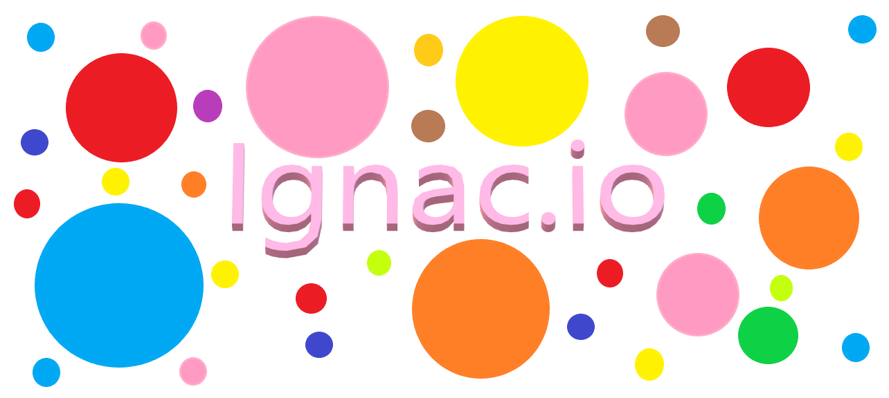
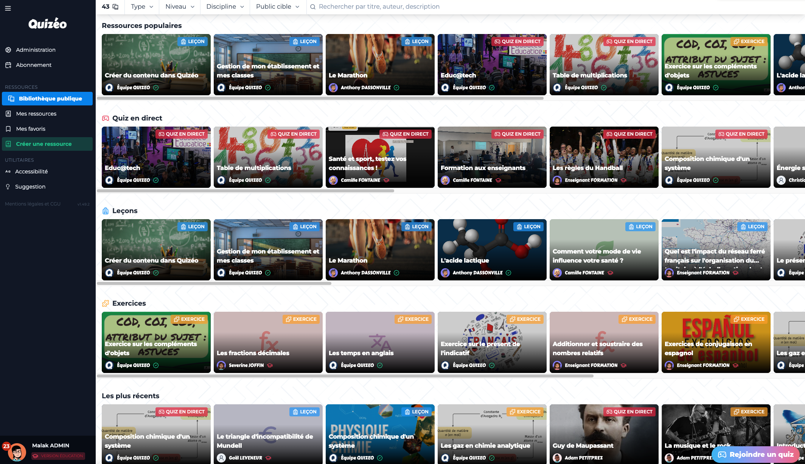

-
Bienvenue dans le e-portefolio de malak !
Je m'appelle Malak Hayar, j'ai 21 ans et je suis en troisième année de BUT informatique à L'IUT A de Lille. J'ai fais le choix de cette formation car l'informatique, en plus d'être un secteur porteur, est un domaine passionnant. Ma curiosité s'est très vite dirigée vers la conception d'application. Je porte un très vif intérêt pour chaque étape de la création et tout le processus qui en découle.

-
Présentation de quelques projets
KNN classifier
Octobre 2022 - Décembre 2022
• Description du projet
Il s'agit d'un projet réalisé en équipe de 4 personnes, d'élaboration d'un outil qui permet de charger des données pour construire un modèle ou pour les classifier à l'aide de l'algorithme d'apprentissage supervisé K-Nearest Neighbors (K-NN) puis de calculer la robustesse du modèle. Il est possible de visualiser les données sous forme de nuage de points en projetant sur deux attributs, d'intéragir avec un point et en ajouter un nouveau
• Mes tâches
Ma tâche était de réaliser la structure principale de l'application. J'ai développé les différentes classes qui articulent le modèle, et j'ai écris des plusieurs dizaines de tests qui recouvrent le code.
• Compétences acquises
J'ai pu apprendre à implémenter un algorithme d'apprentissage complexe, et à mettre en jeu une certaine capacité d'analyse afin de diagnostiquer les différents bugs et problèmes rencontrés tout au long du projet et d'élaborer des solutions adaptés. Ses solutions devaient être réfléchis entre les membres de l'équipe ce qui a nécéssité une compétence de communication.
TutoRAT
Mars 2022 - Juin 2022
• Description du projet
Il s'agit d'un projet de conception d'une application de gestion de tutorat réalisé en une équipe de 3 personnes. Les responsables du tutorat sont les enseignants de la ressource concernée puis il y'a les étudiants ciblés qui sont les tuteurs et les tutorés. On implémente l'algorithme hongrois d'affectation optimale en utilisant des graphes.
• Mes tâches
Ma tâche était la conception de la structure générale de l'application, notamment dans l'implémentation de l'algorithme de calcul d'affectation, mais aussi des différentes classes faisant l'application.
• Compétences acquises
Ce projet m'a donné l'occasion de réfléchir sur les différents mécanismes objets les plus adaptés pour répondre aux besoins de l'application à concevoir. J'ai du faire preuve d'une capacité d'adaptation aux différents outils mis à disposition. J'ai pu apprendre plus concrètement à travailler en équipe en communiquant avec mes camarades et en rassemblant ensemble nos compétences différentes et complémentaires pour que chacun puisse apporter sa pierre à l'édifice.
 Ignac.io
Mars 2023 - Avril 2023
• Description du projet
Il s'agit d'une reprise du célèbre jeu en ligne Agar.io réalisé en Typscript, avec le serveur réalisé en Node.JS et les tests unitaire en Jest. Le jeu se présente sous la forme d'un plateau, vu de dessus, sur lequel se rejoignent toutes les personnes connectées, chacun peut ainsi voir les autres en temps réel. Chaque joueur ou joueuse peut déplacer son avatar sur l'écran et mange de la nourriture sous forme de petits points ce qui le fait grossir. S'il est plus gros qu'un autre joueur, il pourra le manger et ce dernier a perdu.
• Mes tâches
Ma tâche était de réaliser de coder l'application avec l'aide de mon binôme et d'écrire des tests qui recouvrent le code, et de résoudre les bugs au niveau du client et du serveur.
• Compétences acquises
J'ai pu apprendre à implémenter ma première vrai application web en travaillant sur le back et le front de l'applcation, cela m'a permit d'ajouter de nouvelles technologies dans mes compétences. L'application étant aussi plus complexe car en ligne, on a rencontré plusieurs bugs qui avaient plusieurs façons de les résoudre et on devait communiquer pour débattre sur la meilleure façon de les résoudre.
 Quizéo
Mars 2022 - Juin 2022
• Description du projet
Quizéo est une plateforme dévelloppée par l'entreprise tabuléo, chez qui je fais mon alternance. Il s'agit d'une plateforme dédiée aux enseignants pour créer des cours mêlant texte, images et éléments d'interaction avec les élèves. Les enseignants peuvent partager leur créations au sein de leur établissement. Il peuvent également affecter leurs ressources à leurs classes et suivre la progression de leurs élèves.
• Mes tâches
Mes tâches étaient de réaliser plusieurs nouvelles fonctionnalités et de corriger les éventuels bugs signalés pour les utilisateurs, afin d'améliorer l'expérience utilisateur des enseignants et des élèves.
• Compétences acquises
Ce projet m'a donné l'occasion d'apprendre de nouvelles technologies, notamment des framework javascript que je n'avais jamais utilisé auparavant. C'est également le premier projet que j'ai réalisé en entreprise, ce qui m'a permit d'acquerir une nouvelle expérience professionnelle
-
• BUT informatique | IUT A de Lille (2021, en cours)
• L1 Droit | FSJPS, Université de Lille (2021)
• Bac général scientifique | Lycée Yassamine Sidi-Maarouf, Casablanca (2020)
-
Langages


Outils


-
Me contacter
N'hésitez pas à m'envoyer un e-mail, je mets à disposition mon adresse mail professionnelle et universitaire.